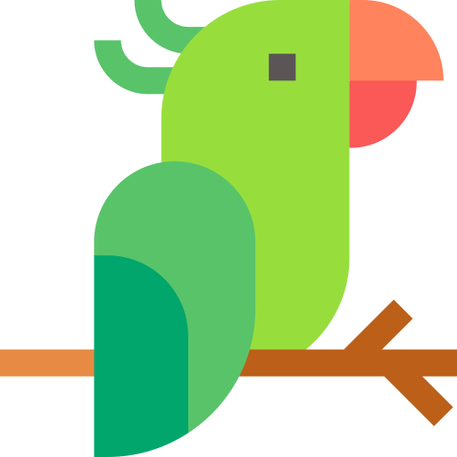
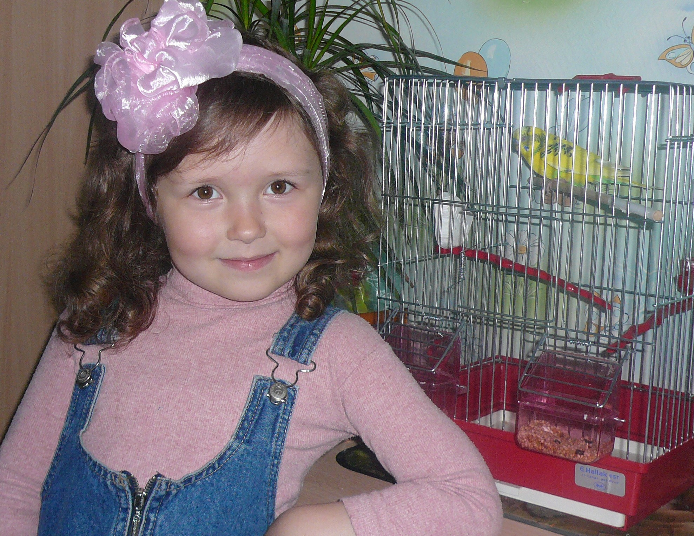

Попугай Кеша
Это мой первый домашний питомец - попугайчик Кеша. Мы назвали его так, потому что в книге по уходу за попугайчиками предлагали именно это имя (хотя папа очень сильно хотел назвать его Шрек).
На самом деле, изначально я хотела говорящего попугая ара. Ну, в детстве мечтать не вредно, обошлась волнистым попугайчиком. Мало чего помню, так как была маленькой. Кстати, мне на фотке 5 лет.
Как-то я вернулась после школы и обнаружила пустую клетку. Родители сказали мне, что он улетел в Африку. Потом я часто видела похожих попугайчиков и на каждого думала, что этой мой улетевший Кеша. На самом деле он умер :(
Через 4 года у меня появился он